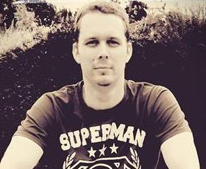

Jon Kulik

Summary
I am a hardworking and dedicated individul with a keen eye for detail with experience in document management control and information management.
My aim is to move my career from that of a handover engineer to a fully fledged web developer.
Education
Art & Design BTEC | Westminster College | 2006 - 2007
Art & Design BTEC | Hammersmith College | 2005 - 2006
Work experience
- Equans - Handover Engineer
May 2024 - present
- Gathering information for handover
- Liaise with the client and being the first point of contact with the client
- Ensuring possitive handovers for project and client relations
- Mace Group - Assistant Information Manager
Sep 2015 - May 2024
- Completing document library migration
- Providing Training and Support to all staff
- Working on an alternative solution to the clients DMS on legacy software ensure everyone still access the clients DMS
- Creating a bespoke report analysis using Microsofts PowerBI to cross check documents in the clients DMS and Mace's across all projects
- G&H Engineering - Junior CAD Designer
May 2013 - May 2015
- Managing Document Control on complex projects both at Heathrow and Gatwick
- Ensuring all As-Built data handed over in time
- Collaborated with other designers
- Morgan Sindall - CAD Technician & Document Controller
Jan 2009 - May 2013
- Working on ensuring that all documents the latest revision and that ensuring that everyone is working of the latest documentation
- Providing Training & resolving IT related issues
- Creating AsBuilt Drawings from a day file
Skills
- Attention to detail ✪ ✪ ✪ ✪ ✪
- Self Motivated ✪ ✪ ✪ ✪
- Works well my own or as a team ✪ ✪ ✪ ✪
- Easy to work with ✪ ✪ ✪ ✪ ✪
- Learns quickly ✪ ✪ ✪ ✪
- Proactive ✪ ✪ ✪ ✪ ✪
Awards and Certifications
- BTEC Art & Design - Distiction (September 2005)